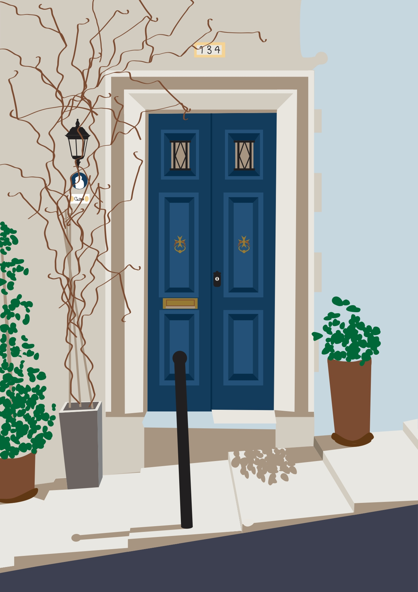
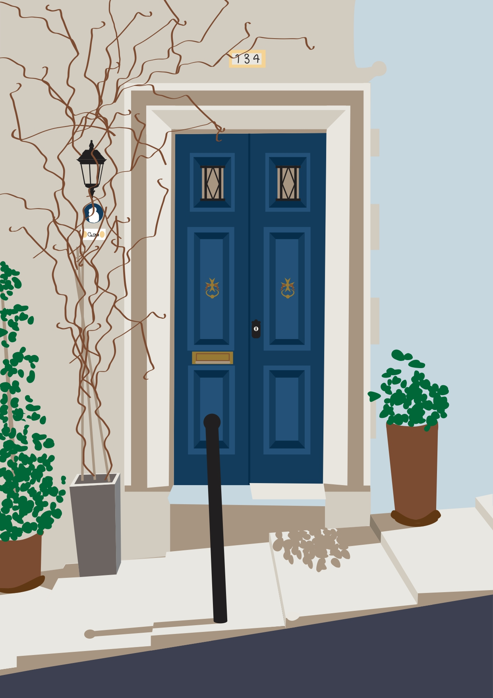
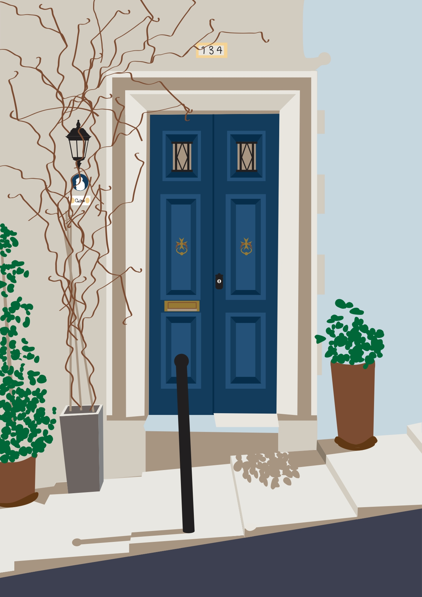

Original Sketch
Original Sketch
 Final Artwork

Final Artwork

Hello there! I am Shirley Ellul, a first-year BFA student currently studying Digital Art at the University of Malta, and welcome to my website.
This is one of my favourite topics and artworks that I have covered and created so far. It is a vector illustration done on Adobe Illustrator, a graphic design software.
Inspired by Te' fit-tazza and Maltatype, this artwork is meant to capture a simple yet iconic part of Maltese architecture, found in many older towns and cities. The process started off with a simple sketch of the door and composition, in order to simplify and better visualise the final work. After that, I started building the final work using basic shapes and colours, slowly adding depth and detail.
Original Door
Original Sketch
Final Artwork
